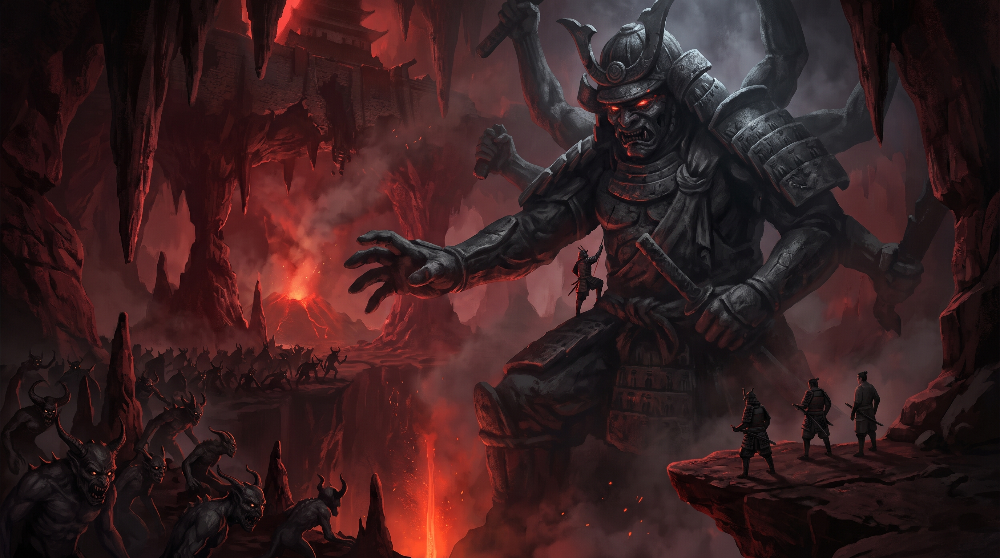
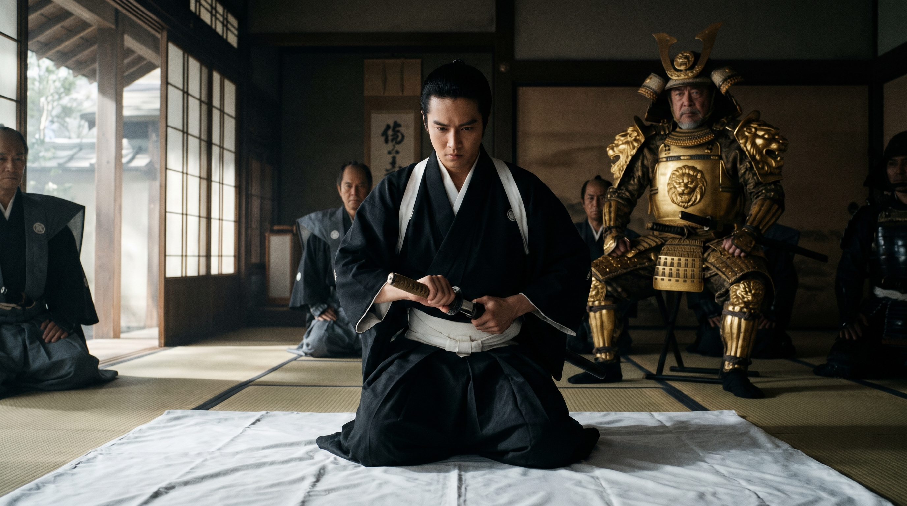
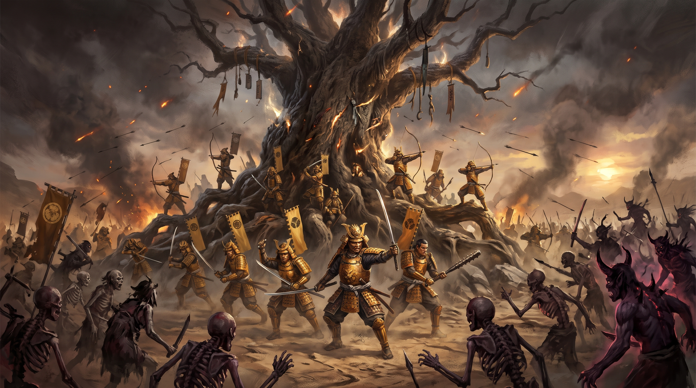

Le mystère de Xian à la frontière nord étant résolu, notre groupe retourne voir le champion d'Emeraude Satsume Doji pour faire un rapport[cite: 3]. Okado est resté avec Ikko pour l'aider à préparer ses affaires pour aller vivre dans la capitale[cite: 3].
Lors d'une halte dans une auberge sur les terres du clan du lion, un enfant vient se planter devant notre table et nous remet un origami en nous saluant[cite: 3]. Pendant que Ryumitaka et Sutokhu regardent l'objet, le gamin me dit qu'un vieux monsieur lui a demandé de nous l'apporter[cite: 3]. L'origami contenait un message de notre protecteur Megumi, il nous avertissait que la bataille de l'arbre de vie allait refaire surface et que nous allions y être mêlés[cite: 3]. Le message se terminait sur une phrase étrange nous avertissant que la mort était parfois un meilleur choix que la défaite[cite: 3]. Nous commencions à être habitués aux conseils singuliers de Megumi mais ce dernier était encore plus intrigant[cite: 3].
Notre passage à Kyuden Ikoma fut bref, nous passâmes saluer le daimyo local et nous fîmes chou blanc à la bibliothèque[cite: 3]. Mais lors de notre seconde rencontre avec le daimyo, il nous conseilla d'aller au village de la source de mémoire qui se trouvait dans la montagne des 7 tonnerres[cite: 3]. Mon passage dans la bibliothèque me laissa perplexe car aucun livre sur l'archerie n'était vraiment digne d'intérêt[cite: 3]. J'ai évidemment gardé cette réflexion pour moi car les bibliothécaires avaient vraiment l'air fier des ouvrages qu'ils gardaient[cite: 3].
En chemin, nous tuâmes un membre d'une troupe de bandits qui s'enfuyait avec des sacs de riz[cite: 3]. Sac qui fut donné au daimyo du village d'après afin de ne pas nous surcharger[cite: 3]. A notre arrivée au village de la source de mémoire, les habitants et Ikoma Yoshisuka (daimyo) nous firent un très bon accueil[cite: 3]. Il répondit favorablement et demanda à son fils Tadashira de nous emmener voir l'arbre de vie dès le lendemain[cite: 3].
Après une petite marche depuis le village, nous sommes arrivés sur le lieu où reposent nos ancêtres[cite: 3]. Contemplant du haut d'une falaise, le paysage en contrebas était impressionnant[cite: 3]. La falaise surplombait une large plaine vide de toute végétation et bordée de vide de l'autre côté[cite: 3]. En son centre trônait un arbre gigantesque[cite: 3]. Son tronc semblait avoir été tailladé à plusieurs endroits et sur plusieurs niveaux[cite: 3]. Je senti au fond de moi mon ancêtre Gusai pleurer, rempli d'une profonde tristesse[cite: 3].
Sur le chemin du retour nous sommes pris en embuscade, mais nous maitrisons rapidement la situation car nous commençons à être presque habitués à ce genre d'escarmouche[cite: 3]. (Note à moi-même, il faudrait peut-être, la prochaine fois, essayer de détecter les ennemis avant…)[cite: 3]
Nous apprenons, grâce à la force de persuasion de Ryumitaka, que ces brigands ont été envoyés par le sorcier Shu Chen[cite: 3]. Nous forçons l'allure pour rentrer au village mais nous arrivons trop tard, tout le monde est déjà mort ou presque[cite: 3]. Ryumitaka persuade un samouraï à moitié mort de nous donner l'emplacement où réside le sorcier[cite: 3].
Nous prenons donc la route vers la citadelle sanglante[cite: 3]. Le château est entouré d'une épaisse brume, les pierres sont rouge sang et nous pouvons entendre des cris affreux qui n'ont plus rien d'humain[cite: 3]. La herse étant levée nous adoptons une posture en tête de flèche avec Ryumitaka et moi à l'arrière garde, Sutokhu au centre et Samui en éclaireur[cite: 3].
Mais à peine la herse passée, celle-ci retombe sur Samui qui n'a pas le temps de l'éviter et la prend sur le dos[cite: 3]. Sutokhu et Ryumitaka se précipitent pour la lever pendant que je me jette de l'autre côté et aide à la soulever[cite: 3]. Nous sortons Samui de dessous et reprenons le chemin vers la porte principale de l'édifice[cite: 3]. L'entrée est gigantesque et les hurlements semblent venir du haut d'un escalier de taille cyclopéenne[cite: 3]. Des cadavres sont accrochés aux murs, l'ambiance est vraiment lugubre, mais ça n'a pas l'air de déranger Samui qui commence à monter les escaliers quatre par quatre[cite: 3]. Le premier étage est composé de salles de tortures dans lesquelles des hommes et des femmes sont en piteux état[cite: 3]. Il leur manque des membres et le sang coagulé par terre montre bien les terribles épreuves qu'ils ont dû endurer[cite: 3]. Samui décide d'achever les blessés graves pour mettre fin à leur tourment et de libérer les autres, nous acceptons[cite: 3].
Le rez-de-chaussée est semblable au premier étage et nous accompagnons finalement tout le monde dehors avant de revenir dans le château et entamer la descente vers les sous-sols[cite: 3]. Nous descendons un couloir sur une cinquantaine de mètres, je sens la température monter au fur et à mesure que nous descendons[cite: 3]. Au bout du couloir, trois chemins s'offrent à nous[cite: 3]. Nous commençons à explorer le chemin de droite qui semble peu usitée[cite: 3]. Nous arrivons dans une grotte dans laquelle se trouve une statue de « celui que l'on ne peut pas nommer » (Fu Leng) d'au moins 30 mètres de haut[cite: 3]. Son bras est tendu au-dessus d'une crevasse dans laquelle on aperçoit, le sorcier, un général lion et plus de 3.000 oni[cite: 3]. La main de la statue semble contenir des choses, Samui se lance donc à l'escalade de la statue[cite: 3]. Et après quelques sueurs froides, il redescend sain et sauf avec quinze livres dont le livre de la bataille de l'arbre de vie[cite: 3]. Il nous apprend que tous les 100 ans à lieu une terrible bataille entre un sorcier maléfique et une armée du Rokugan au pied de l'arbre de vie[cite: 3]. La bataille aura lieu dans 7 jours[cite: 3]. Nous devons donc lever une armée pour combattre les forces du mal et protéger l'arbre quoi qu'il en coûte[cite: 3].

Nous partons chacun de notre côté demander de l'aide aux différents clans lions des environs, le rendez-vous est fixé dans 7 jours au plus tard du côté Ouest de la plaine de l'arbre de vie[cite: 3]. Samui part chez les Matsu, Sutokhu chez la famille Kitsu à Shiro Sano Ken Hayai, Ryumitaka à Kyuden Ikoma et moi je dois aller convaincre Akodo Toturi le chef incontesté des lions[cite: 3].
Je me lance sur la route à bride abattue et je limite mes arrêts afin de gagner du temps car il joue contre nous[cite: 3]. J'aperçois enfin mon objectif, je me rends directement au château déposer mon cheval aux écuries et demande une audience de toute urgence auprès du daimyo[cite: 3]. Les kamis sont avec moi car Akodo Toturi me reçoit après deux heures d'attente durant lesquelles j'ai eu le temps de me décrasser du voyage[cite: 3].
Il n'est pas encore midi quand je rentre dans la salle d'audience[cite: 3]. Elle est gigantesque et finement décorée[cite: 3]. Après les salutations d'usage envers une personne si prestigieuse, je raconte mon histoire et implore l'aide du clan Akodo pour protéger l'arbre de vie[cite: 3]. Ayant fini mon récit, je suis congédié dans une chambre où je trouve de la nourriture et un lit[cite: 3]. Je suis réveillé dans l'après-midi par un serviteur qui m'annonce qu'Akodo Toturi va de nouveau me recevoir pour me donner une réponse[cite: 3].
J'arrive dans la salle, serein d'avoir fait le maximum mais terrorisé à l'idée de pouvoir échouer[cite: 3]. Sans fioritures, le daimyo me fait part de sa crainte de voir les oni parcourir ses terres mais pour lui prouver ma bonne foi je dois me faire seppuku[cite: 3]. J'ai jusqu'au lendemain matin pour réfléchir[cite: 3]. Le soleil se couche lorsque l'on me raccompagne à mes quartiers, je sens que la nuit va être longue[cite: 3]. Les heures passent et je suis plongé dans mes réflexions, ma vie en échange de la sauvegarde de l'Empire d'Émeraude[cite: 3]. Dans ma tête, mes souvenirs se bousculent : la tristesse de mon ancêtre Gusai lorsque nous admirions l'arbre de vie ; les paroles de Megumi sur la mort et la victoire ; Les ouvrages de Li Er sur les samouraïs, d'ailleurs l'un d'eux disait « la voie du samouraï, c'est la mort »[cite: 3].
Au matin ma décision est prise, je ne pourrai plus me regarder en face si je n'accepte pas l'offre qui m'est proposée[cite: 3]. C'est avec le cœur lourd mais l'esprit léger que l'on m'amène dans une salle où est disposé un grand drap blanc sur le sol[cite: 3]. Akodo Toturi a son daisho à ses côtés, c'est donc lui qui m'assistera dans l'épreuve[cite: 3]. C'est avec une conviction renouvelée par l'honneur que me fait le daimyo que je m'assois sur le drap, prend mon wakizashi et m'ouvre le ventre[cite: 3]. Je sens le sang couler sur mes mains, ma vue se trouble, j'attends de sentir la lame du katana sur mon cou mais rien ne vient[cite: 3]. J'entends des cris qui s'éloignent de plus en plus, puis je sens une vague de chaleur au fond de moi[cite: 3].

Lorsque je reprends mes esprits je suis toujours dans la salle, le drap blanc est gorgé de sang et des Shugenja s'affairent autour de moi[cite: 3]. Akodo Toturi me regarde et m'annonce que j'aie prouvé ma valeur et qu'il accède à ma requête[cite: 3]. J'avais réussi ma mission, le clan Akodo allait renforcer notre armée de 1500 hommes[cite: 3]. Nous partîmes le lendemain pour arriver à l'aube du septième jour[cite: 3].
Mes compagnons avaient également tous réussi leur objectif et nous alignions une troupe de 3500 hommes face à l'armée des morts de Shu Shen[cite: 3]. Regroupé à l'arrière garde, je retrouvais mes camarades avec Akodo Toturi[cite: 3]. Tous s'inclinèrent avec respect pour ce chef de guerre[cite: 3]. Mais lorsque Samui lui demanda comment il comptait mener la bataille ce dernier se retourna vers moi et lui répondit que le commandement de cette armée me revenait de droit au vu du sacrifice que j'étais prêt à faire[cite: 3]. J'acceptais l'offre en m'inclinant mais je savais que je n'avais pas le droit à l'erreur[cite: 3].
Étant novice j'allais devoir m'appuyer sur mes compagnons pour que l'on gagne cette bataille[cite: 3]. Notre objectif étant de protéger l'arbre à tout prix, je décidais de faire avancer les archers jusqu'à son pied[cite: 3]. Ils devaient être notre dernière ligne de défense[cite: 3]. Samui et Sutokhu se proposèrent d'aller en première ligne afin de les renforcer[cite: 3]. Les deux armées étaient de taille semblable, il fallait donc tenter de profiter du terrain[cite: 3]. C'est la proposition de Sutokhu qui fut retenue, il fallait tenter une brèche du côté des montagnes pour rabattre l'ennemi vers le vide[cite: 3].
Après ce bref conseil de guerre, les troupes se mirent en route car l'armée des morts commençait à s'organiser de l'autre côté de la plaine[cite: 3]. Ryumitaka allait rester avec moi près de l'arbre et faire en sorte que cette tête brûlée de Samui reste en un seul morceau[cite: 3]. Lorsque l'armée adverse chargea dans un grondement sourd, je beuglais mes derniers ordres et me concentra sur la bataille[cite: 3]. Les ennemies approchaient en courant car il avait vu nos archers[cite: 3]. Mais dès qu'ils furent à 100 mètres, j'ordonnai de tirer la première salve de flèches[cite: 3]. Malheureusement, le clan du lion ne disposait pas d'archer assez performant et beaucoup trop de flèches tombèrent trop courtes[cite: 3]. J'avais déjà décoché deux autres flèches avant qu'ils soient de nouveau prêts à tirer[cite: 3]. La seconde salve fut plus efficace et de nombreux mort vivant tombèrent[cite: 3]. Je fis passer l'ordre de tirer à volonté et vis les deux premières lignes s'entrechoquer dans un fracas assourdissant[cite: 3]. La suite de la bataille resta à jamais floue dans mon esprit car le chaos qui régnait est indescriptible[cite: 3].

Après plusieurs heures de combat farouches, le reste de notre armée formait une poche de résistance près de l'arbre[cite: 3]. Nous étions à un contre deux mais aucun samouraï ne flanchait[cite: 3]. Dans un dernier hurlement, nous réussîmes finalement à reprendre le dessus[cite: 3]. Pendant que nous achevions les blessés adverses, mon regard se posa sur l'arbre de vie[cite: 3]. Aucune nouvelle blessure ne lui avait été infligée, nos ancêtres pouvaient être fiers de ce que nous avions accompli aujourd'hui[cite: 3]. Et même si Shu Chen s'était enfuie, nous pouvions nous sentir digne de notre rang[cite: 3]. Les lions se feraient un plaisir de le traquer et de le détruire[cite: 3]. Un conseil de guerre se tint le soir même et Akodo Toturi nous félicita en personne pour notre exploit et notre bravoure[cite: 3]. Il annonça qu'il avait une dette envers nous et que nous pourrions à jamais demander une faveur au clan Akodo[cite: 3].